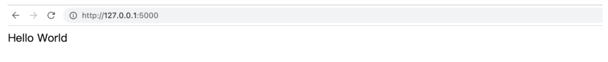

Flask Hello World
Flask 是使用 Python 语言编写的轻量级的 Web 应用程序框架。使用该技术，我们可以将训练得到的模型封装一个能够提供预测的网络应用程序，即: 可以对外提供一个服务接口。
Flask中文文档：https://docs.jinkan.org/docs/flask/
安装命令如下:
pip install Flask==2.1.0
1. Flask Hello World
首先，创建一个简单的 Flask 应用程序:
from flask import Flask
app = Flask(__name__)
@app.route('/', methods=['GET'])
def index():
return 'Hello World'
if __name__ == '__main__':
app.run()
运行该程序，输出结果如下：
* Serving Flask app 'app' (lazy loading)
* Environment: production
WARNING: This is a development server. Do not use it in a production deployment.
Use a production WSGI server instead.
* Debug mode: off
* Running on http://127.0.0.1:5000 (Press CTRL+C to quit)
我们在浏览器输入: http://127.0.0.1:5000, 得到如下显示:

这个结果表示: 通过 http://127.0.0.1:5000 访问了我们定义在服务器端一个服务函数，大家可以理解为：远程调用了一个 Python 函数，并且该函数返回了函数的运行结果。
接下来，我们详细讲解各部分的含义，方便后续代码的编写。
2. Flask 应用的创建
app = Flask(__name__)
上述代码表示，我们创建了一个 Flask 应用实例，也可以理解为我们所有的请求都是由该实例来处理。接下来，我们调用该实例的 run 方法:
if __name__ == '__main__':
app.run()
run 方法会启动一个用于开发测试的服务器，该服务器会在某个端口监听，来获得客户端发送过来的请求。其流程如下：
请求 --> 测试服务器 --> Flask 应用
注意：在开发阶段我们使用该测试服务器，部署时，我们将会使用 Gunicorn 服务器。后面演示部署时，我们就暂且使用开发服务器。
3. Flask 请求处理函数
当我们的 Flask 应用获得了客户的请求，此时就需要将该强求转发给某个具体的业务函数来处理，如何定义不同的请求和具体的业务函数之间的映射关系呢？
@app.route('/', methods=['GET'])
def index():
return 'Hello World'
上述代码中，index 函数是我们定义的具体业务函数，它的处理结果就是返回一个字符串 "Hello World".
如何将某个请求映射到该函数呢？首先，我们得清楚，不同的请求对应的 url 是不同的，例如：
看新闻的请求： http://xxx.xxx.xxx.xxx:5000/news
听音乐的请求： http://xxx.xxx.xxx.xxx:5000/music
当请求的 url 是 /news 时，我们就可以使用 news 函数来处理，请求的 url 是 /music 时，我们就可以使用 music 函数来处理。
注意: 此处的 URL 是由我们自己定义的。假设，我们希望用户访问 /phone-price 时，就可以获得模型的预测结果，我们就可以编写一个函数来和该 URL 对应起来。
定义请求 URL 和具体业务函数映射关系就是使用 app.route 装饰器，该装饰器第一个参数就是自定义的请求 URL，第二个参数 methods 为请求类型。
请求类型有多种，我们主要用到了两种请求类型：GET、POST。
（1）GET 请求: 用于只获得数据，而不需要向服务端提交任何数据。
（2）POST 请求: 用于向服务端发送请求数据，例如：我们要进行垃圾邮件分类，需要将邮件数据数据发送给服务端，此时应该使用 POST 方式。